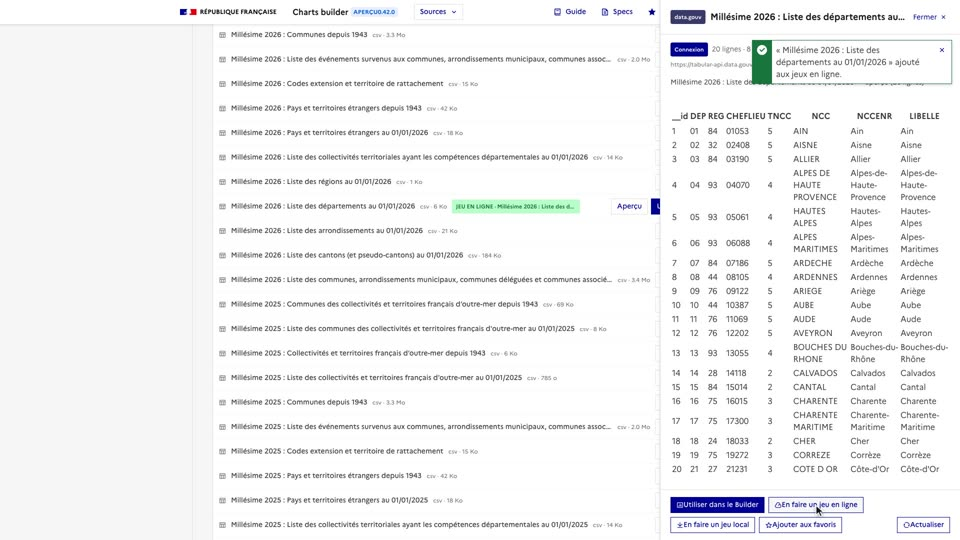
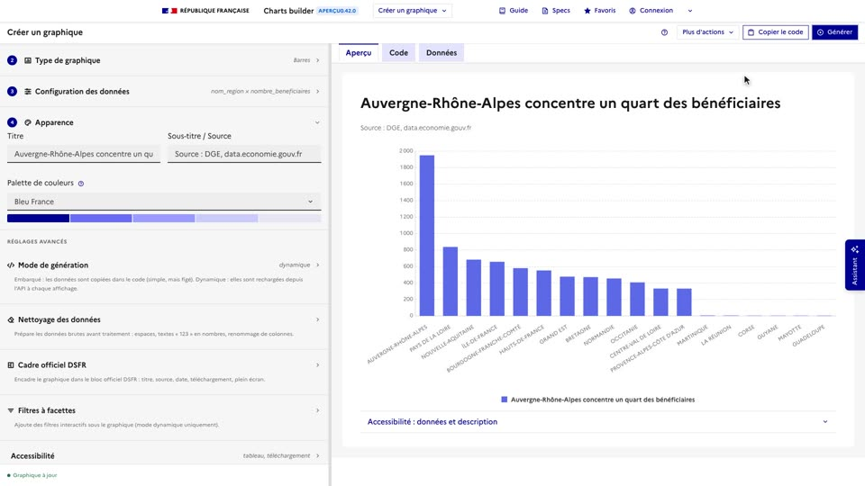
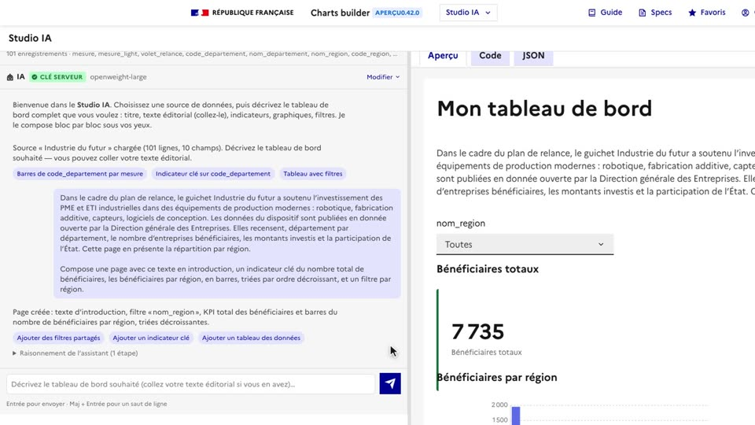
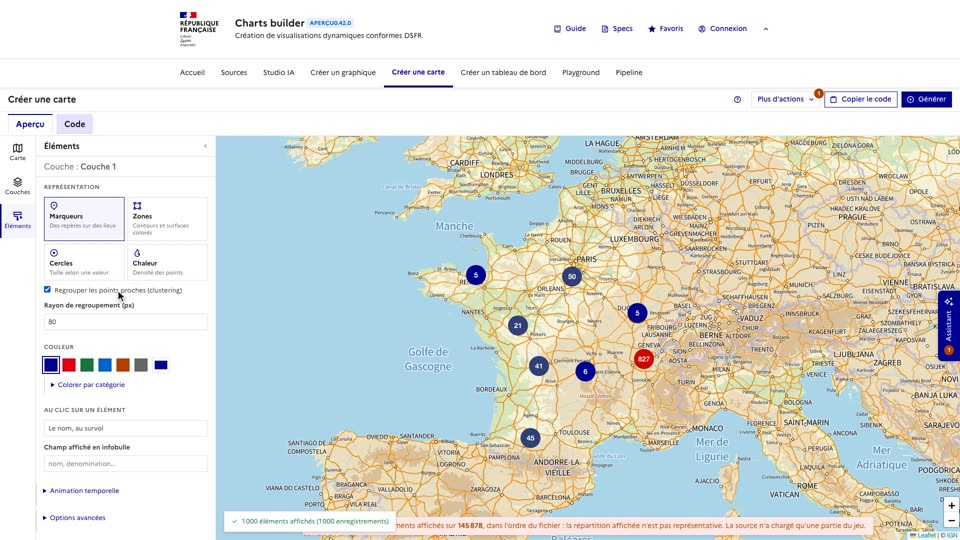
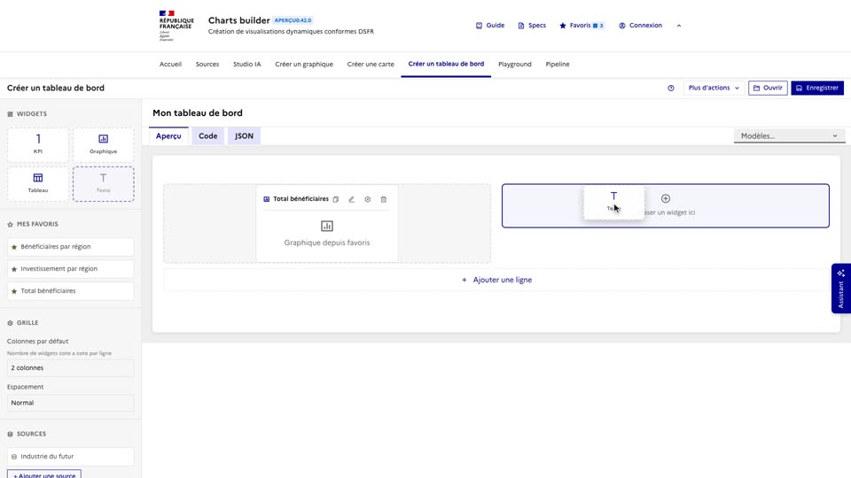
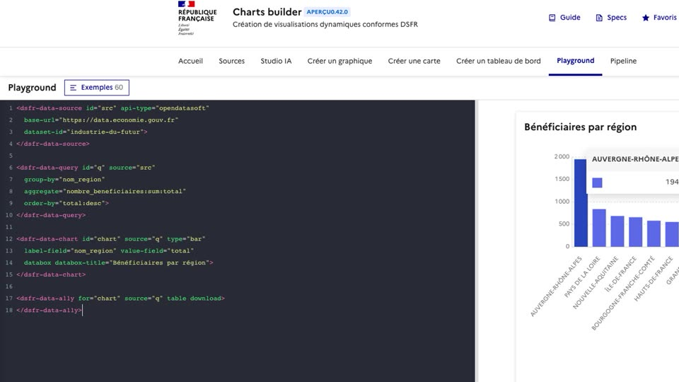
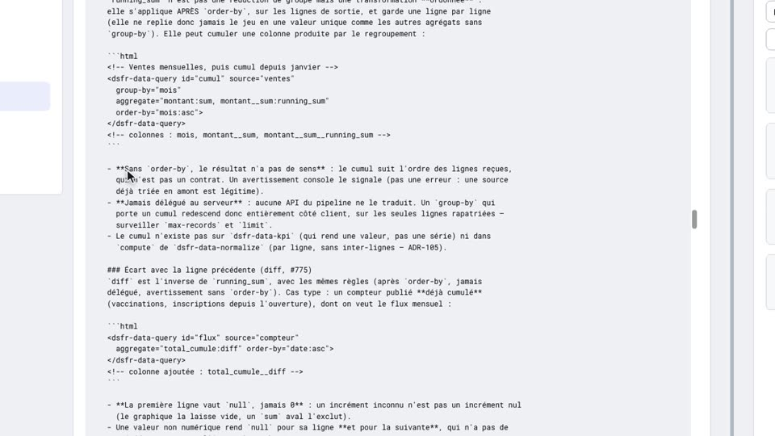
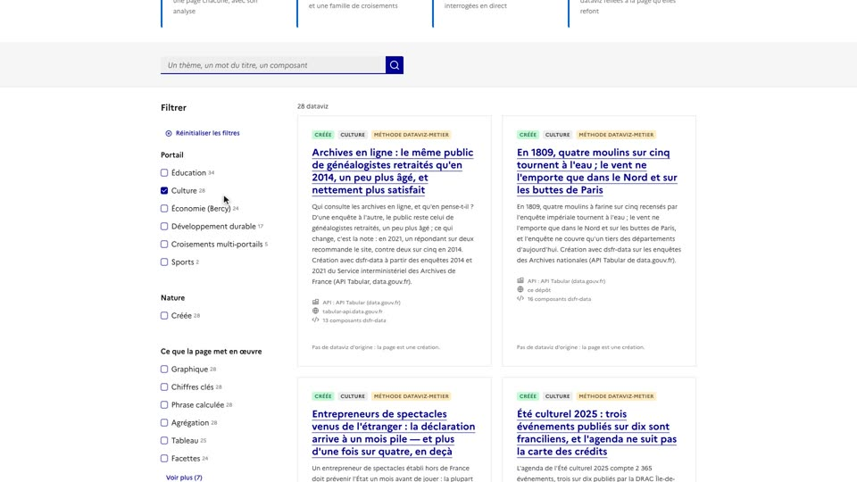
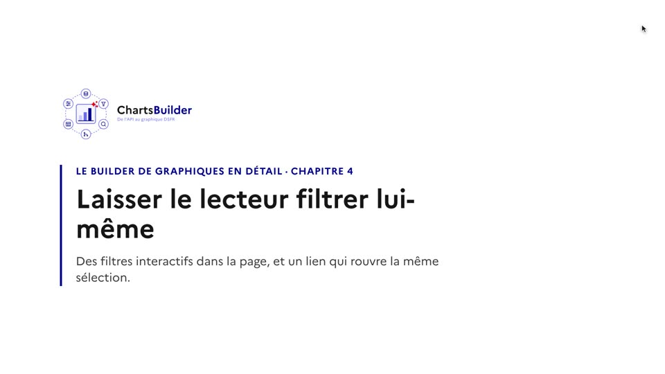
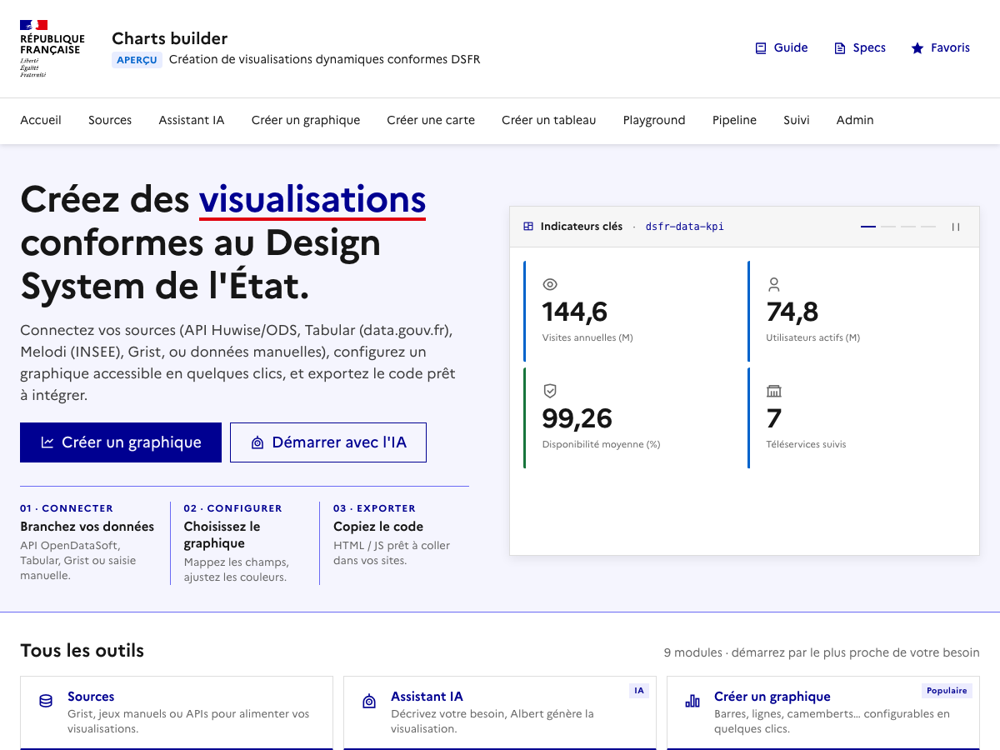

Guide de ChartsBuilder
ChartsBuilder permet à tout agent public de transformer une donnée ouverte en graphique dynamique, accessible et conforme au Système de design de l'État. Ce guide présente ses outils et la bibliothèque libre dsfr-data sur laquelle il repose.
Chaque outil propose une visite guidée, lancée une seule fois automatiquement ; vous pouvez la relancer ou la réinitialiser ici.
Découvrir en vidéo
Découvrir ChartsBuilder (3 min 44) — Ce que ChartsBuilder change pour publier des données : le problème des images figées, la bibliothèque dsfr-data, l'application et le tour de ses outils. Lire la transcription
Puis, cas par cas, de la donnée ouverte à la page publiée :
Les sources : des données en direct ou locales
Brancher une donnée en direct (OpenDataSoft, data.gouv.fr, Grist, INSEE Melodi) ou créer un jeu local : saisie, import CSV, jointure.
Sources · 3 min 10

Illustrer une page de son site avec un graphique vivant
Remplacer une capture de tableur par un graphique officiel, accessible et à jour, puis le coller dans sa page.
Builder · 2 min 50

Une page complète composée par l'IA à partir de son texte
Coller son texte, décrire la page en français : l'IA compose l'indicateur, le graphique, le filtre et le tableau, et l'on garde la main.
Studio IA · 3 min 03

Cartographier les centres de contrôle technique de son département
Du jeu national des prix du contrôle technique à la carte filtrée d'un département, avec sa fiche au clic.
Carte · 3 min 06

Assembler un tableau de bord à partir de ses favoris
Déposer ses graphiques favoris sur une grille, ajouter un encart, passer en plein écran et exporter la page.
Tableau de bord · 2 min 25

La bibliothèque dsfr-data pour les intégrateurs
Trois balises HTML, sans JavaScript : la bibliothèque libre dsfr-data utilisée directement dans une page.
Bibliothèque · 2 min 08

Créer un graphique depuis son assistant IA (MCP)
Le serveur MCP met ChartsBuilder à disposition de l'assistant IA que l'on utilise déjà : les échanges, pas à pas.
MCP · 2 min 17

Pour aller plus loin : open-data-viz, la vitrine de dsfr-data
Cent dix dataviz de données publiques écrites en balises HTML, et le banc d'essai qui les mesure.
open-data-viz · 3 min 53

Le Builder de graphiques en détail
Vidéo chapitrée : forme, séries, filtres, facettes, tableau, cadre officiel et accessibilité, vérification. Un sommaire mène au chapitre voulu.
Vidéo chapitrée · 7 chapitres · 14 min

Toutes les vidéos, avec leurs transcriptions
L'interface
L'application est accessible depuis la page d'accueil qui regroupe tous les outils :

- Sources : connecter et gérer les sources de données (API, data.gouv.fr, Grist, INSEE, jeux locaux)
- Créer un graphique : le Builder, un générateur visuel de graphiques pas à pas
- Studio IA : graphiques et tableaux de bord composés par conversation avec l'IA Albert
- Créer une carte : points, zones et fiches au clic, sur des données géographiques
- Créer un tableau de bord : assembler ses graphiques favoris sur une grille
- Playground : éditeur de code interactif avec aperçu en temps réel
- Suivi : suivi des déploiements de widgets en production
Parcours utilisateur
Des parcours pas à pas, écrits comme des récits d'usage : données locales, Grist, Studio IA, Playground, tableau de bord, API REST, suivi.
Exemples par composant
Exemples en direct avec leur code source : dsfr-data-source, normalize, query, search, facets, display.
Ressources
Playground
Éditeur de code interactif avec exemples préchargés et aperçu en temps réel.
Démo des composants
Voir tous les composants avec leurs attributs et exemples interactifs.
DSFR Chart
Documentation officielle des composants graphiques DSFR.
Télémétrie opt-in (dsfr-data-beacon)
La bibliothèque n'envoie aucune télémétrie par défaut. Pour alimenter le
tableau de bord de monitoring d'une instance auto-hébergée, déposez un
<dsfr-data-beacon> dans la page : la présence d'une url
vaut opt-in, et un simple réglage global sert de coupe-circuit.
<!-- Opt-in : déclare la cible de collecte de CETTE page -->
<dsfr-data-beacon url="https://mon-instance.example.fr/api/beacon"></dsfr-data-beacon>
<!-- Coupe-circuit global : désactive toute télémétrie, même si un beacon est présent -->
<script>window.DSFR_DATA_BEACON = false;</script>